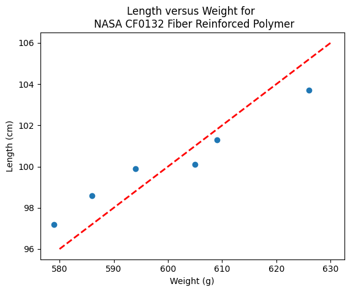

ENGR 1330 Computational Thinking with Data Science
Copyright © 2021 Theodore G. Cleveland and Farhang Forghanparast
Last GitHub Commit Date: 4 Nov 2021
26: Linear Regression#
Purpose
Homebrew (using covariance formulas)
Homebrew using Matrix Algebra
Using packages: numpy.linalg.lstsq (future versions of this ebook)
Using packages: statsmodel package
Using packages: sklearn package
Why regression belongs to both statistics and machine learning
Learning algorithms used to create a linear regression model
Preparing data for linear regression
What is Regression#
A systematic procedure to model the relationship between one dependent variable and one or more independent variables and quantify the uncertainty involved in response predictions.
Objectives#
Create linear regression models from data using primitive python
Create linear regression models from data using NumPy and Pandas tools
Create presentation-quality graphs and charts for reporting results
Computational Thinking Concepts#
Description |
Computational Thinking Concept |
|---|---|
Linear Model |
Abstraction |
Response and Explanatory Variables |
Decomposition |
Primitive arrays: vectors and matrices |
Data Representation |
NumPy arrays: vectors and matrices |
Data Representation |
Textbook Resources#
https://inferentialthinking.com/chapters/15/Prediction.html
Data Modeling: Regression Approach#
Regression is a basic and commonly used type of predictive analysis.
The overall idea of regression is to assess:
does a set of predictor/explainatory variables (features) do a good job in predicting an outcome (dependent/response) variable?
Which explainatory variables (features) in particular are significant predictors of the outcome variable, and in what way do they–indicated by the magnitude and sign of the beta estimates–impact the outcome variable?
What is the estimated(predicted) value of the response under various excitation (explainatory) variable values?
What is the uncertainty involved in the prediction?
These regression estimates are used to explain the relationship between one dependent variable and one or more independent variables.
The simplest form is a linear regression equation with one dependent(response) and one independent(explainatory) variable is defined by the formula
\(y_i = \beta_0 + \beta_1*x_i\), where \(y_i\) = estimated dependent(response) variable value, \(\beta_0\) = constant(intercept), \(\beta_1\) = regression coefficient (slope), and \(x_i\) = independent(predictor) variable value
More complex forms involving non-linear (in the \(\beta_{i}\)) parameters and non-linear combinations of the independent(predictor) variables are also used - these are beyond the scope of this lesson.
We have already explored the underlying computations involved (without explaination) by just solving a particular linear equation system; what follows is some background on the source of that equation system.
Fundamental Questions#
What is regression used for?
Why is it useful?
Three major uses for regression analysis are (1) determining the strength of predictors, (2) forecasting an effect, and (3) trend forecasting.
First, the regression might be used to identify the strength of the effect that the independent variable(s) have on a dependent variable. Typical questions are what is the strength of relationship between dose and effect, sales and marketing spending, or age and income.
Second, it can be used to forecast effects or impact of changes. That is, the regression analysis helps us to understand how much the dependent variable changes with a change in one or more independent variables. A typical question is, “how much additional sales income do I get for each additional $1000 spent on marketing?”
Third, regression analysis predicts trends and future values. The regression analysis can be used to get point estimates. A typical question is, “what will the price of gold be in 6 months?”
Consider the image below from a Texas Instruments Calculator user manual

In the context of our class, the straight solid line is the Data Model whose equation is
\(Y = \beta_0 + \beta_1*X\).
The ordered pairs \((x_i,y_i)\) in the scatterplot are the observation (or training set).
As depicted here \(Y\) is the response to different values of the explainitory variable \(X\). The typical convention is response on the up-down axis, but not always.
The model parameters are \(\beta_0\) and \(\beta_1\) ; once known can estimate (predict) response to (as yet) unobserved values of \(x\)
Classically, the normal equations are evaluated to find the model parameters:
\(\beta_1 = \frac{\sum x\sum y~-~N\sum xy}{(\sum x)^2~-~N\sum x^2}\) and \(\beta_0 = \bar y - \beta_1 \bar x\)
These two equations are the solution to the “design matrix” linear system earlier, but presented as a set of discrete arithmetic operations.
Classical Regression by Normal Equations#
We will illustrate the classical approach to finding the slope and intercept using the normal equations first a plotting function, then we will use the values from the Texas Instruments TI-55 user manual.
First a way to plot:
### Lets Make a Plotting Function
def makeAbear(xvalues,yvalues,xleft,yleft,xright,yright,xlab,ylab,title):
# plotting function dependent on matplotlib installed above
# xvalues, yvalues == data pairs to scatterplot; FLOAT
# xleft,yleft == left endpoint line to draw; FLOAT
# xright,yright == right endpoint line to draw; FLOAT
# xlab,ylab == axis labels, STRINGS!!
# title == Plot title, STRING
import matplotlib.pyplot
matplotlib.pyplot.scatter(xvalues,yvalues)
matplotlib.pyplot.plot([xleft, xright], [yleft, yright], 'k--', lw=2, color="red")
matplotlib.pyplot.xlabel(xlab)
matplotlib.pyplot.ylabel(ylab)
matplotlib.pyplot.title(title)
matplotlib.pyplot.show()
return
Now the two lists to process
# Make two lists
sample_length = [101.3,103.7,98.6,99.9,97.2,100.1]
sample_weight = [609,626,586,594,579,605]
# We will assume weight is the explainatory variable, and it is to be used to predict length.
makeAbear(sample_weight, sample_length,580,96,630,106,'Weight (g)','Length (cm)','Length versus Weight for \n NASA CF0132 Fiber Reinforced Polymer')
/tmp/ipykernel_22504/952544254.py:12: UserWarning: color is redundantly defined by the 'color' keyword argument and the fmt string "k--" (-> color='k'). The keyword argument will take precedence.
matplotlib.pyplot.plot([xleft, xright], [yleft, yright], 'k--', lw=2, color="red")

Notice the dashed line, we supplied only two (x,y) pairs to plot the line, so lets get a colonoscope and find where it came from.
def myline(slope,intercept,value1,value2):
'''Returns a tuple ([x1,x2],[y1,y2]) from y=slope*value+intercept'''
listy = []
listx = []
listx.append(value1)
listx.append(value2)
listy.append(slope*listx[0]+intercept)
listy.append(slope*listx[1]+intercept)
return(listx,listy)
The myline function returns a tuple, that we parse below to make the plot of the data model. This is useful if we wish to plot beyond the range of the observations data.
slope = 0.13 #0.13
intercept = 23 # 23
xlow = 540 # here we define the lower bound of the model plot
xhigh = 640 # upper bound
object = myline(slope,intercept,xlow,xhigh)
xone = object[0][0]; xtwo = object[0][1]; yone = object[1][0]; ytwo = object[1][1]
makeAbear(sample_weight, sample_length,xone,yone,xtwo,ytwo,'Weight (g)','Length (cm)','Length versus Weight for \n NASA CF0132 Fiber Reinforced Polymer')
/tmp/ipykernel_22504/952544254.py:12: UserWarning: color is redundantly defined by the 'color' keyword argument and the fmt string "k--" (-> color='k'). The keyword argument will take precedence.
matplotlib.pyplot.plot([xleft, xright], [yleft, yright], 'k--', lw=2, color="red")

print(xone,yone)
print(xtwo,ytwo)
540 93.2
640 106.2
Now lets get “optimal” values of slope and intercept from the Normal equations
# Evaluate the normal equations
sumx = 0.0
sumy = 0.0
sumxy = 0.0
sumx2 = 0.0
sumy2 = 0.0
for i in range(len(sample_weight)):
sumx = sumx + sample_weight[i]
sumx2 = sumx2 + sample_weight[i]**2
sumy = sumy + sample_length[i]
sumy2 = sumy2 + sample_length[i]**2
sumxy = sumxy + sample_weight[i]*sample_length[i]
b1 = (sumx*sumy - len(sample_weight)*sumxy)/(sumx**2-len(sample_weight)*sumx2)
b0 = sumy/len(sample_length) - b1* (sumx/len(sample_weight))
lineout = ("Linear Model is y=%.3f" % b1) + ("x + %.3f" % b0)
print("Linear Model is y=%.3f" % b1 ,"x + %.3f" % b0)
Linear Model is y=0.129 x + 22.813
slope = 0.129 #0.129
intercept = 22.813 # 22.813
xlow = 540
xhigh = 640
object = myline(slope,intercept,xlow,xhigh)
xone = object[0][0]; xtwo = object[0][1]; yone = object[1][0]; ytwo = object[1][1]
makeAbear(sample_weight, sample_length,xone,yone,xtwo,ytwo,'Weight (g)','Length (cm)','Length versus Weight for \n NASA CF0132 Fiber Reinforced Polymer')
/tmp/ipykernel_22504/952544254.py:12: UserWarning: color is redundantly defined by the 'color' keyword argument and the fmt string "k--" (-> color='k'). The keyword argument will take precedence.
matplotlib.pyplot.plot([xleft, xright], [yleft, yright], 'k--', lw=2, color="red")

Where do these normal equations come from?#
Consider our linear model \(y = \beta_0 + \beta_1 \cdot x + \epsilon\). Where \(\epsilon\) is the error in the estimate. If we square each error and add them up (for our training set) we will have \(\sum \epsilon^2 = \sum (y_i - \beta_0 - \beta_1 \cdot x_i)^2 \). Our goal is to minimize this error by our choice of \(\beta_0 \) and \( \beta_1 \)
The necessary and sufficient conditions for a minimum is that the first partial derivatives of the error as a function must vanish (be equal to zero). We can leverage that requirement as
\(\frac{\partial(\sum \epsilon^2)}{\partial \beta_0} = \frac{\partial{\sum (y_i - \beta_0 - \beta_1 \cdot x_i)^2}}{\partial \beta_0} = - \sum 2[y_i - \beta_0 + \beta_1 \cdot x_i] = -2(\sum_{i=1}^n y_i - n \beta_0 - \beta_1 \sum_{i=1}^n x_i) = 0 \)
and
\(\frac{\partial(\sum \epsilon^2)}{\partial \beta_1} = \frac{\partial{\sum (y_i - \beta_0 - \beta_1 \cdot x_i)^2}}{\partial \beta_1} = - \sum 2[y_i - \beta_0 + \beta_1 \cdot x_i]x_i = -2(\sum_{i=1}^n x_i y_i - n \beta_0 \sum_{i=1}^n x_i - \beta_1 \sum_{i=1}^n x_i^2) = 0 \)
Solving the two equations for \(\beta_0\) and \(\beta_1\) produces the normal equations (for linear least squares), which leads to
\(\beta_1 = \frac{\sum x\sum y~-~n\sum xy}{(\sum x)^2~-~n\sum x^2}\) \(\beta_0 = \bar y - \beta_1 \bar x\)
Lets consider a more flexible way by fitting the data model using linear algebra instead of the summation notation.
Computational Linear Algebra#
We will start again with our linear data model’
Note
The linear system below should be familiar, we used it in the Predictor-Response Data Model (without much background). Here we learn it is simply the matrix equivalent of minimizing the sumn of squares error for each equation
\(y_i = \beta_0 + \beta_1 \cdot x_i + \epsilon_i\) then replace with vectors as
So our system can now be expressed in matrix-vector form as
\(\mathbf{Y}=\mathbf{X}\mathbf{\beta}+\mathbf{\epsilon}\) if we perfrom the same vector calculus as before we will end up with a result where pre-multiply by the transpose of \(\mathbf{X}\) we will have a linear system in \(\mathbf{\beta}\) which we can solve using Gaussian reduction, or LU decomposition or some other similar method.
The resulting system (that minimizes \(\mathbf{\epsilon^T}\mathbf{\epsilon}\)) is
\(\mathbf{X^T}\mathbf{Y}=\mathbf{X^T}\mathbf{X}\mathbf{\beta}\) and solving for the parameters gives \(\mathbf{\beta}=(\mathbf{X^T}\mathbf{X})^{-1}\mathbf{X^T}\mathbf{Y}\)
So lets apply it to our example - what follows is mostly in python primative
# linearsolver with pivoting adapted from
# https://stackoverflow.com/questions/31957096/gaussian-elimination-with-pivoting-in-python/31959226
def linearsolver(A,b):
n = len(A)
M = A
i = 0
for x in M:
x.append(b[i])
i += 1
# row reduction with pivots
for k in range(n):
for i in range(k,n):
if abs(M[i][k]) > abs(M[k][k]):
M[k], M[i] = M[i],M[k]
else:
pass
for j in range(k+1,n):
q = float(M[j][k]) / M[k][k]
for m in range(k, n+1):
M[j][m] -= q * M[k][m]
# allocate space for result
x = [0 for i in range(n)]
# back-substitution
x[n-1] =float(M[n-1][n])/M[n-1][n-1]
for i in range (n-1,-1,-1):
z = 0
for j in range(i+1,n):
z = z + float(M[i][j])*x[j]
x[i] = float(M[i][n] - z)/M[i][i]
# return result
return(x)
#######
# matrix multiply script
def mmult(amatrix,bmatrix,rowNumA,colNumA,rowNumB,colNumB):
result_matrix = [[0 for j in range(colNumB)] for i in range(rowNumA)]
for i in range(0,rowNumA):
for j in range(0,colNumB):
for k in range(0,colNumA):
result_matrix[i][j]=result_matrix[i][j]+amatrix[i][k]*bmatrix[k][j]
return(result_matrix)
# matrix vector multiply script
def mvmult(amatrix,bvector,rowNumA,colNumA):
result_v = [0 for i in range(rowNumA)]
for i in range(0,rowNumA):
for j in range(0,colNumA):
result_v[i]=result_v[i]+amatrix[i][j]*bvector[j]
return(result_v)
colNumX=2 #
rowNumX=len(sample_weight)
xmatrix = [[1 for j in range(colNumX)]for i in range(rowNumX)]
xtransp = [[1 for j in range(rowNumX)]for i in range(colNumX)]
yvector = [0 for i in range(rowNumX)]
for irow in range(rowNumX):
xmatrix[irow][1]=sample_weight[irow]
xtransp[1][irow]=sample_weight[irow]
yvector[irow] =sample_length[irow]
xtx = [[0 for j in range(colNumX)]for i in range(colNumX)]
xty = []
xtx = mmult(xtransp,xmatrix,colNumX,rowNumX,rowNumX,colNumX)
xty = mvmult(xtransp,yvector,colNumX,rowNumX)
beta = []
#solve XtXB = XtY for B
beta = linearsolver(xtx,xty) #Solve the linear system What would the numpy equivalent be?
slope = beta[1] #0.129
intercept = beta[0] # 22.813
xlow = 580
xhigh = 630
object = myline(slope,intercept,xlow,xhigh)
xone = object[0][0]; xtwo = object[0][1]; yone = object[1][0]; ytwo = object[1][1]
makeAbear(sample_weight, sample_length,xone,yone,xtwo,ytwo,'Weight (g)','Length (cm)','Length versus Weight for \n NASA CF0132 Fiber Reinforced Polymer')
/tmp/ipykernel_22504/952544254.py:12: UserWarning: color is redundantly defined by the 'color' keyword argument and the fmt string "k--" (-> color='k'). The keyword argument will take precedence.
matplotlib.pyplot.plot([xleft, xright], [yleft, yright], 'k--', lw=2, color="red")

beta
[22.812624584693076, 0.12890365448509072]
What’s the Value of the Computational Linear Algebra ?#
The value comes when we have more explainatory variables, and we may want to deal with curvature.
Note
The lists below are different that the example above!
# Make two lists
yyy = [0,0,1,1,3]
xxx = [-2,-1,0,1,2]
slope = 0.5 #0.129
intercept = 1 # 22.813
xlow = -3
xhigh = 3
object = myline(slope,intercept,xlow,xhigh)
xone = object[0][0]; xtwo = object[0][1]; yone = object[1][0]; ytwo = object[1][1]
makeAbear(xxx, yyy,xone,yone,xtwo,ytwo,'xxx','yyy','yyy versus xxx')
/tmp/ipykernel_22504/952544254.py:12: UserWarning: color is redundantly defined by the 'color' keyword argument and the fmt string "k--" (-> color='k'). The keyword argument will take precedence.
matplotlib.pyplot.plot([xleft, xright], [yleft, yright], 'k--', lw=2, color="red")

colNumX=2 #
rowNumX=len(xxx)
xmatrix = [[1 for j in range(colNumX)]for i in range(rowNumX)]
xtransp = [[1 for j in range(rowNumX)]for i in range(colNumX)]
yvector = [0 for i in range(rowNumX)]
for irow in range(rowNumX):
xmatrix[irow][1]=xxx[irow]
xtransp[1][irow]=xxx[irow]
yvector[irow] =yyy[irow]
xtx = [[0 for j in range(colNumX)]for i in range(colNumX)]
xty = []
xtx = mmult(xtransp,xmatrix,colNumX,rowNumX,rowNumX,colNumX)
xty = mvmult(xtransp,yvector,colNumX,rowNumX)
beta = []
#solve XtXB = XtY for B
beta = linearsolver(xtx,xty) #Solve the linear system
slope = beta[1] #0.129
intercept = beta[0] # 22.813
xlow = -3
xhigh = 3
object = myline(slope,intercept,xlow,xhigh)
xone = object[0][0]; xtwo = object[0][1]; yone = object[1][0]; ytwo = object[1][1]
makeAbear(xxx, yyy,xone,yone,xtwo,ytwo,'xxx','yyy','yyy versus xxx')
/tmp/ipykernel_22504/952544254.py:12: UserWarning: color is redundantly defined by the 'color' keyword argument and the fmt string "k--" (-> color='k'). The keyword argument will take precedence.
matplotlib.pyplot.plot([xleft, xright], [yleft, yright], 'k--', lw=2, color="red")

colNumX=4 #
rowNumX=len(xxx)
xmatrix = [[1 for j in range(colNumX)]for i in range(rowNumX)]
xtransp = [[1 for j in range(rowNumX)]for i in range(colNumX)]
yvector = [0 for i in range(rowNumX)]
for irow in range(rowNumX):
xmatrix[irow][1]=xxx[irow]
xmatrix[irow][2]=xxx[irow]**2
xmatrix[irow][3]=xxx[irow]**3
xtransp[1][irow]=xxx[irow]
xtransp[2][irow]=xxx[irow]**2
xtransp[3][irow]=xxx[irow]**3
yvector[irow] =yyy[irow]
xtx = [[0 for j in range(colNumX)]for i in range(colNumX)]
xty = []
xtx = mmult(xtransp,xmatrix,colNumX,rowNumX,rowNumX,colNumX)
xty = mvmult(xtransp,yvector,colNumX,rowNumX)
beta = []
#solve XtXB = XtY for B
beta = linearsolver(xtx,xty) #Solve the linear system
howMany = 20
xlow = -2
xhigh = 2
deltax = (xhigh - xlow)/howMany
xmodel = []
ymodel = []
for i in range(howMany+1):
xnow = xlow + deltax*float(i)
xmodel.append(xnow)
ymodel.append(beta[0]+beta[1]*xnow+beta[2]*xnow**2)
# Now plot the sample values and plotting position
import matplotlib.pyplot
myfigure = matplotlib.pyplot.figure(figsize = (10,5)) # generate a object from the figure class, set aspect ratio
# Built the plot
matplotlib.pyplot.scatter(xxx, yyy, color ='blue')
matplotlib.pyplot.plot(xmodel, ymodel, color ='red')
matplotlib.pyplot.ylabel("Y")
matplotlib.pyplot.xlabel("X")
mytitle = "YYY versus XXX"
matplotlib.pyplot.title(mytitle)
matplotlib.pyplot.show()

Using packages#
So in core python, there is a fair amount of work involved to write script - how about an easier way? First lets get things into a dataframe. Using the lists from the example above we can build a dataframe using pandas.
# Load the necessary packages
import numpy as np
import pandas as pd
import statistics
from matplotlib import pyplot as plt
# Create a dataframe:
data = pd.DataFrame({'X':xxx, 'Y':yyy})
data
| X | Y | |
|---|---|---|
| 0 | -2 | 0 |
| 1 | -1 | 0 |
| 2 | 0 | 1 |
| 3 | 1 | 1 |
| 4 | 2 | 3 |
statsmodel package#
Now load in one of many modeling packages that have regression tools. Here we use statsmodel which is an API (applications programming interface) with a nice formula syntax. In the package call we use Y~X which is interpreted by the API as fit Y as a linear function of X, which interestingly is our design matrix from a few lessons ago.
# repeat using statsmodel
import statsmodels.formula.api as smf
# Initialise and fit linear regression model using `statsmodels`
model = smf.ols('Y ~ X', data=data) # model object constructor syntax
model = model.fit()
Now recover the parameters of the model
model.params
Intercept 1.0
X 0.7
dtype: float64
# Predict values
y_pred = model.predict()
# Plot regression against actual data
plt.figure(figsize=(12, 6))
plt.plot(data['X'], data['Y'], 'o') # scatter plot showing actual data
plt.plot(data['X'], y_pred, 'r', linewidth=2) # regression line
plt.xlabel('X')
plt.ylabel('Y')
plt.title('model vs observed')
plt.show();

We could use our own plotting functions if we wished, and would obtain an identical plot
slope = model.params[1] #0.7
intercept = model.params[0] # 1.0
xlow = -2
xhigh = 2
object = myline(slope,intercept,xlow,xhigh)
xone = object[0][0]; xtwo = object[0][1]; yone = object[1][0]; ytwo = object[1][1]
makeAbear(data['X'], data['Y'],xone,yone,xtwo,ytwo,'xxx','yyy','yyy versus xxx')
/tmp/ipykernel_22504/571376869.py:1: FutureWarning: Series.__getitem__ treating keys as positions is deprecated. In a future version, integer keys will always be treated as labels (consistent with DataFrame behavior). To access a value by position, use `ser.iloc[pos]`
slope = model.params[1] #0.7
/tmp/ipykernel_22504/571376869.py:2: FutureWarning: Series.__getitem__ treating keys as positions is deprecated. In a future version, integer keys will always be treated as labels (consistent with DataFrame behavior). To access a value by position, use `ser.iloc[pos]`
intercept = model.params[0] # 1.0
/tmp/ipykernel_22504/952544254.py:12: UserWarning: color is redundantly defined by the 'color' keyword argument and the fmt string "k--" (-> color='k'). The keyword argument will take precedence.
matplotlib.pyplot.plot([xleft, xright], [yleft, yright], 'k--', lw=2, color="red")

Now lets add another column \(x^2\) to introduce the ability to fit some curvature
data['XX']=data['X']**2 # add a column of X^2
model = smf.ols('Y ~ X + XX', data=data) # model object constructor syntax
model = model.fit()
model.params
Intercept 0.571429
X 0.700000
XX 0.214286
dtype: float64
# Predict values
y_pred = model.predict()
# Plot regression against actual data
plt.figure(figsize=(12, 6))
plt.plot(data['X'], data['Y'], 'o') # scatter plot showing actual data
plt.plot(data['X'], y_pred, 'r', linewidth=2) # regression line
plt.xlabel('X')
plt.ylabel('Y')
plt.title('model vs observed')
plt.show();

Our homebrew plotting tool could be modified a bit (shown below just cause …)
myfigure = matplotlib.pyplot.figure(figsize = (10,5)) # generate a object from the figure class, set aspect ratio
# Built the plot
matplotlib.pyplot.scatter(data['X'], data['Y'], color ='blue')
matplotlib.pyplot.plot(data['X'], y_pred, color ='red')
matplotlib.pyplot.ylabel("Y")
matplotlib.pyplot.xlabel("X")
mytitle = "YYY versus XXX"
matplotlib.pyplot.title(mytitle)
matplotlib.pyplot.show()

Another useful package is sklearn so repeat using that tool (same example)
sklearn package#
# repeat using sklearn
# Multiple Linear Regression with scikit-learn:
from sklearn.linear_model import LinearRegression
# Build linear regression model using X,XX as predictors
# Split data into predictors X and output Y
predictors = ['X', 'XX']
X = data[predictors]
y = data['Y']
# Initialise and fit model
lm = LinearRegression() # This is the sklearn model tool here
model = lm.fit(X, y)
print(f'alpha = {model.intercept_}')
print(f'betas = {model.coef_}')
alpha = 0.5714285714285714
betas = [0.7 0.21428571]
fitted = model.predict(X)
# Plot regression against actual data - What do we see?
plt.figure(figsize=(12, 6))
plt.plot(data['X'], data['Y'], 'o') # scatter plot showing actual data
plt.plot(data['X'], fitted,'r', linewidth=2) # regression line
plt.xlabel('x axis')
plt.ylabel('y axis')
plt.title('plot title')
plt.show();

Now repeat using the original Texas Instruments example#
sample_length = [101.3,103.7,98.6,99.9,97.2,100.1]
sample_weight = [609,626,586,594,579,605]
data = pd.DataFrame({'X':sample_weight, 'Y':sample_length})
data
| X | Y | |
|---|---|---|
| 0 | 609 | 101.3 |
| 1 | 626 | 103.7 |
| 2 | 586 | 98.6 |
| 3 | 594 | 99.9 |
| 4 | 579 | 97.2 |
| 5 | 605 | 100.1 |
# Build linear regression model using X,XX as predictors
# Split data into predictors X and output Y
predictors = ['X']
X = data[predictors]
y = data['Y']
# Initialise and fit model
lm = LinearRegression()
model = lm.fit(X, y)
print(f'alpha = {model.intercept_}')
print(f'betas = {model.coef_}')
alpha = 22.812624584717597
betas = [0.12890365]
fitted = model.predict(X)
xvalue=data['X'].to_numpy()
# Plot regression against actual data - What do we see?
plt.figure(figsize=(12, 6))
plt.plot(data['X'], data['Y'], 'o') # scatter plot showing actual data
plt.plot(xvalue, fitted, 'r', linewidth=2) # regression line
plt.xlabel('Sample Weight (g)')
plt.ylabel('Sample Length (cm)')
plt.title('Length versus Weight for \n NASA CF0132 Fiber Reinforced Polymer')
plt.show();

Summary#
We examined regression as a way to fit lines to data (and make predictions from those lines). The methods presented are
Using the normal equations (pretty much restricted to a linear model)
Constructed as a linear system of equations using \(Y=X \cdot \beta\) where \(X\) is the design matrix. We used homebrew solver, but
numpy.linalgwould be a better bet for practice.Using
statsmodelpackageUsing
sklearnpackage
Note
There are probably dozens of other ways to perform linear regression - different packages and such. Just read the package documentation, construct a simple example so you understand the function call(s) and you can regress to your heart’s content.
References#
“Linear Regression in Python” by Sadrach Pierre available at* https://towardsdatascience.com/linear-regression-in-python-a1d8c13f3242
“Introduction to Linear Regression in Python” available at* https://cmdlinetips.com/2019/09/introduction-to-linear-regression-in-python/
“Linear Regression in Python” by Mirko Stojiljković available at* https://realpython.com/linear-regression-in-python/
If you can’t read …
Laboratory 26#
Examine (click) Laboratory 26 as a webpage at Laboratory 26.html
Download (right-click, save target as …) Laboratory 26 as a jupyterlab notebook from Laboratory 26.ipynb
Exercise Set 26#
Examine (click) Exercise Set 26 as a webpage at Exercise 26.html
Download (right-click, save target as …) Exercise Set 26 as a jupyterlab notebook at Exercise Set 26.ipynb